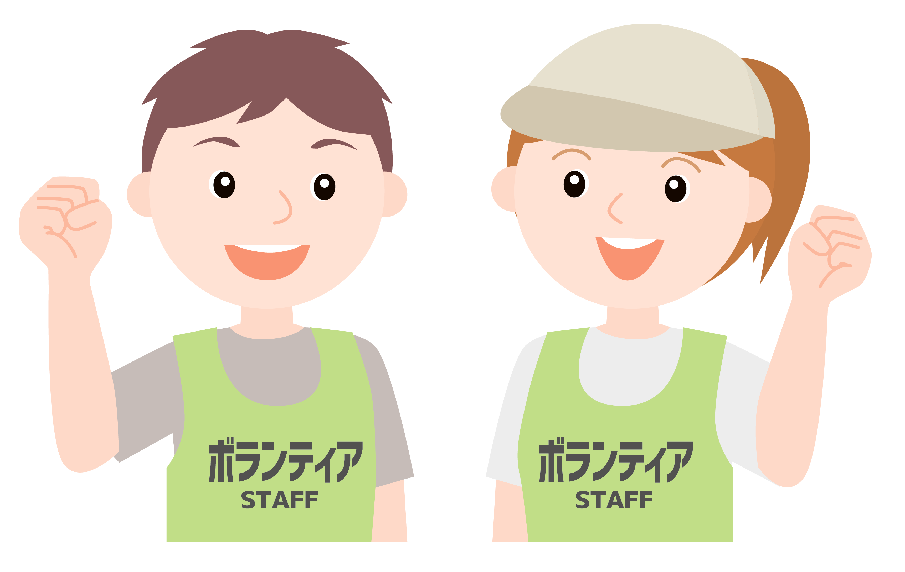

高齢者支援
元気に長生き、地域で安心
「長寿の村」大宜味で、高齢者の皆さまが住み慣れた地域で生き生きと暮らし続けられるよう、多彩な事業を展開しています。
がんじゅう教室
くがにサロン
在宅安心カー
介護予防
大宜味村社協は、地域の皆さまのさまざまな課題に寄り添い、支援しています。
「長寿の村」大宜味で、高齢者の皆さまが住み慣れた地域で生き生きと暮らし続けられるよう、多彩な事業を展開しています。
障がいのある方が地域の中で自分らしく生活できるよう、移動支援・相談支援など必要なサービスをお届けします。
生活に困難を抱える方へ、資金貸付や食料支援など、一人ひとりの状況に寄り添った支援を行います。
すべての子どもが健やかに育つよう、発達相談や就学支援など、子育て家庭を地域ぐるみで支えます。

ボランティア活動の支援や共同店ネットワークとの連携を通じて、地域の絆を深め、支え合う仕組みを育てます。
「どこに相談していいかわからない」そんなときも大丈夫。大宜味村社協が窓口となり、適切なサービスにつなげます。
大宜味村社会福祉協議会は、村内の皆さまの福祉向上を目的に設立された社会福祉法人です。 高齢者・障がい者・子ども・生活困窮者など、支援を必要とするすべての方が、地域の中で安心して暮らせるよう、さまざまな事業・サービスを展開しています。
世界的にも有名な「長寿の村」大宜味で、地域の人々が支え合い、笑顔あふれるコミュニティをつくるため、行政・地域・住民の皆さまと連携しながら活動を続けています。